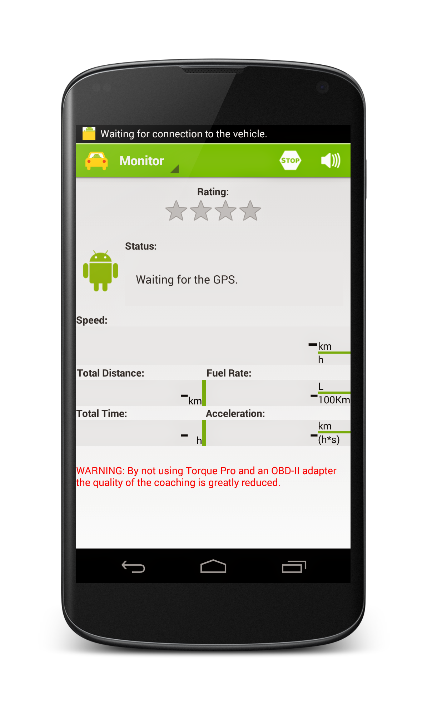

I am Ângela, a Software Engineer born and raised in Portugal and currently located in Munich, Germany.
I have a passion for building innovative and useful technology products, which can make people's life better and easier. As a developer, I am always concerned with the quality of the things that I build. I pay close attention to details to ensure correctness and to help create elegant user interfaces and experiences.
If you have a collaboration proposal or an interesting challenge for me, drop me a line!
I promise to reply.
If you want to know more about me, feel free to grab my CV .
WORK
Here are some selected projects I have worked on.
AngelMail
2013-2014
This project was developed during my master's dissertation and continued after I finished my degree. AngelMail is an Android email application based on the code of Android's default email client. The main goal of the application AngelMail is to integrate in a cohesive form, functionalities of prioritization, visualization and organization of email in order to help users manage their email more effectively and efficiently.
Technologies: Android, Google App Engine, Jetty and SQLite.
Driving Coach
2011-2014
The main objective of this project is to assist the driver in real time with tips that helped him/her to improve their driving from the efficiency point of view. With this application the drivers can review their efficiency and try to improve their driving behaviour based on recognition of mistakes that they have made.
Technologies: Android.
Article
NLife
2012
NLife is an extension for the most common Internet browsers to capture coordinates on any map or web page with embedded coordinate information. This product arised from the NDrive's desire to improve the navigation experience which provided to its users.
Technologies: HTML, CSS, JavaScrpit and Python.
NDrive's WebsitePortoInMotion
2011-2012
The goal of this project was to create an application that showed schedules and route information about public transport in a fast and intuitive way. The data used was based on the city of Porto but it is incomplete and not reliable. A website, a mobile web version, and an Android native application were built.
Technologies: HTML, CSS, JavaScrpit, Android and Ruby on Rails.
WebsiteFEUP Mobile
2011-2012
FEUP Mobile is a Android mobile client of Sigarra, University of Porto Information System, which speeds up common actions. It also tries to provide some services not available on the web version.
Technologies: Android.
Source Code